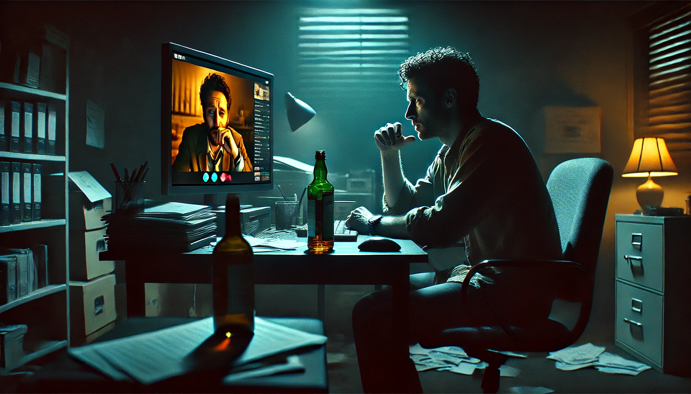

The Day of Inflexion
Play this while reading for added ambience.
Introduction
The sprawling squalor of Thurrock was in stark contrast to its days before the 'Day of Inflexion' on April 3rd 2029. Hyperinflation had devastated the town, which had struggled to maintain its pride after the end of the 20th century. The few productive jobs that were left had been eradicated by the extreme, and sudden, rise in prices that occurred that day. The FTSE was decimated when the markets, having seen the oil crisis in Oman, rapidly spiralled into chaos over an eight-hour period. By the end of that day, the Pound was worth only 0.1% of what it was the previous day.
The collapse was swift. The government, unprepared and paralyzed by the scale and speed of the catastrophe, attempted to impose emergency measures: price controls, rationing, capital punishment for looting, and a digital pound that never gained trust. By the time Westminster realised the severity of the crisis, the country was already over.
Thurrock, once a modest but functional town to the east of London, had been particularly ill-equipped to handle the collapse. The shipyards had long since shuttered, and the once-thriving port had been reduced to rusting cranes and empty warehouses. When the hyperinflation hit, what little was left of the local economy evaporated. Banks closed overnight, shops were looted within hours, and the police simply vanished.
The McKenzie family had been one of the last holdouts of stability. Before the crash, Ian McKenzie had worked as a technician at a local telecoms firm on a zero-hour contract. His wife, Laura, had been a nurse at the local NHS, where she was bullied and overworked to which she attributed her miscarriage. They had no children, which was commonplace for the time.
Despite Ian and Laura working full time, they lived paycheck to paycheck, worrying about the next unexpected event: a car breakdown, a boiler malfunction, a sudden eviction from their rental property. In many ways, it was something of a premonition; most of the townsfolk lived like this. Economic decline had been present for decades, but nothing was to be done by the powers that be. Decline was to be "managed", not tackled; most of the population simply did not work due to old age and a lack of available opportunities. Any jobs that did exist were highly coveted, usually in the public sector that was propped up by riches from London. The Day of Inflexion brought it all to its natural, yet extreme, conclusion.
The McKenzies' modest, £2,500 in savings had become worthless in the space of hours. Their home, a semi-detached house on a quiet cul-de-sac, now sat amid an unlit ghost street where only a handful of neighbours still remained. On the evening of April 4th, 2029, Ian stood at his window, staring forlornly at the flickering candlelight in distant houses. He could hear shouting in the distance—sporadic, uncontrolled.

He hadn't experienced anything like it in his life. Recent events had been a surreal haze of disbelief and growing horror. The news had gone offline within hours of the collapse, the government broadcasts replaced with looping emergency messages that spoke of calm while everything outside burned. The internet was unreliable, sometimes flickering back to life for a few minutes before vanishing again. The radio was his only real link to the wider world, and even that had grown quieter by the day. Only BBC Radio 4 was in service, broadcasting classical music around the clock.
The McKenzies had spent the first night barricading their doors and windows, not that they expected it to help much if someone truly wanted in. The supermarkets had been stripped bare by the end of April 3rd, and those who hadn't stockpiled food were now beginning to panic. Ian knew that eventually, desperation would come knocking.
The distant shouting stopped, leaving a heavy silence in its wake. Ian turned away from the window and looked at Laura, who sat at the kitchen table, turning a can of beans over in her hands. She had always been thin, but now she looked hollowed out, the shadows under her eyes deepening.
"We can't stay here," she said suddenly. "We're out of food, the water's off, and it's not secure."
Ian swallowed. "Where would we go?"
"Somewhere safer." She didn't need to say it; everyone knew what was coming. The police had vanished, the government had lost control, and soon it would just be the strongest, or the most ruthless, who ruled the streets.
"We could go north," Ian suggested, though even as he said it, he doubted the idea. Newcastle was a war zone, if the rumors were true. The rich had fled to their estates, their private islands, or their fortified compounds, leaving the rest of the country to tear itself apart. It was widely believed that the government was not prepared for such an incident, but seeing it up close was a different experience.
"Or we find a group," Laura said. "Safety in numbers."
Ian hesitated. He didn't trust anyone. Not anymore.
A loud thud outside made them both freeze. Not a gunshot—something heavier. A bin being knocked over, maybe, or someone shoving against a door.
Ian grabbed the rusting kitchen knife from the table and moved cautiously back to the window. In the dim glow of the few streetlights that still flickered, he saw them—three figures moving carefully in the alleyway. They weren’t looters, not yet. More like scavengers, desperate people checking doors, looking for any sign of life inside the houses.
Ian’s grip tightened on the knife, though he knew it was useless. No one had any reason to break in yet—most houses still had food, people still believed some kind of order would return. But fear was settling in.
Laura stood slowly, setting the can of beans down on the table, her fingers lingering on the metal rim.
“We need to go,” she whispered.
“Somewhere safer. Somewhere with supplies.”
The supermarkets had closed their doors on April 3rd, when the first wave of panic buying had stripped the shelves bare. The staff had locked up, but by now, people started breaking in, searching for whatever they could find.
“It’s only been two days,” Ian muttered, more to himself than her. “People won’t panic yet. Not fully." He refused to accept the reality that was unfolding.
Laura’s voice was quiet. “They already are.”
She was right. He had seen it earlier when he went to check the car. The man across the street, Mark, had been outside talking to his wife, his voice tense. “Cash machines aren’t working. You see that? It’s all worthless.” He had shaken £200 in notes in his hand, like he could make it mean something again.
He glanced at Laura, who was pulling on her coat, her movements careful but purposeful. He felt his stomach twist.
“We can’t wait, Ian.”
He knew she was right deep down. They needed to move before the last bits of normality vanished completely. Before the quiet desperation in people’s eyes turned into something worse.
Ian took one last look at the flickering television screen in the corner. The BBC emergency message looped again, the words cold and clinical against a distorted background:
"PUBLIC SAFETY ANNOUNCEMENT. REMAIN CALM. REMAIN INDOORS. UPDATES TO FOLLOW."

April 5th, 2029 - 5:47 PM
The air outside was thick with an eerie quiet. No sirens, no distant hum of traffic, no background noise of life carrying on. Just the occasional murmur of voices, doors shutting too hard, footsteps moving with urgency. The world hadn’t fallen apart yet, but it was starting to bend.
Ian and Laura stepped out into the cold evening, pulling their coats tight. The street was lined with dark windows, curtains drawn. A few houses still had lights on—warm, familiar glows that once meant security. Now they looked exposed.
Down the road, a couple stood by their car, the boot open, filled with bags. Ian recognized them—Tom and Elaine, a middle-aged couple who had lived here longer than he and Laura. Elaine’s arms were crossed, her face tense as Tom rummaged through their things, his breath visible in the cold.
Laura hesitated. “Are they leaving?”
Ian exhaled through his nose. “Looks like it.”
Laura didn’t say anything, but Ian could feel the weight of her thoughts pressing against his own. If Tom and Elaine were leaving, where were they going? And did they know something Ian and Laura didn’t?
They kept walking. Past houses where TVs flickered behind curtains, where people sat in their front rooms, staring at the same emergency broadcast. The BBC had only looped the same message for hours.
"PUBLIC SAFETY ANNOUNCEMENT. REMAIN CALM. REMAIN INDOORS."
But what did that even mean in practice? Stay inside and starve? Wait until the government figured out what to do? Ian wasn’t sure what he had expected—some kind of plan, some kind of reassurance that everything would be fixed soon. Instead, it was just empty words.
At the end of the street, the small Co-op supermarket sat in darkness. The automatic doors had been locked, but through the glass, Ian could see the shelves. Most were stripped bare, but a few things still clung to their places—some tins of soup, a few lonely bags of dried pasta. Bags of flour, condiments, the gluten-free aisle, and some jars of pickled vegetables were the only things that remained.
There were people outside. Not a mob, not yet, but a handful of figures standing around, talking in low voices, looking through the glass. Some had bags. Some looked like they’d been there a while, waiting.
Laura grabbed Ian’s wrist. “Is this a mistake?”
Ian didn’t answer. He wasn’t sure.
A man in a leather jacket stepped forward and tried the door. It rattled, but held. The group muttered. Someone else—an older woman, wrapped in a thick scarf—shook her head.
“There’s no deliveries,” said a man from within to no one in particular. “Nothing’s coming. They’re not restocking. Go home.”
Ian swallowed. “Maybe we should go back.”
Laura’s hand tightened around his wrist.
“Go back to what?”
Ian had no answer.
Behind them, a car engine started. They both turned. Tom and Elaine were pulling out of their driveway, their car packed full, taillights glowing red in the dim street. The car wheelspun as it left the driveway. And then, just like that, they were gone.
Ian felt something shift inside him, something heavy and awful.
"Let's hunker down for tonight. It's said the human body can survive for a month without food, so we should be okay. There's the bottled water we bought from Costco, so that should keep us going on that front.".
With the lack of a clear plan, Laura hesistantly agreed. The pair walked back home, trying to process the fact that their lives have changed irrevocably.
April 6th, 2029 – 5:57 AM
Ian sat at the kitchen table, a lukewarm cup of tea in his hands, staring at the last of their bread. He hadn't slept a wink. The bread had gone stale overnight. He pinched a piece off, chewing mechanically, while Laura sat opposite him, her hands placed atop an empty mug. Neither of them spoke.
The power was still on—for now. But nothing felt normal. On the small TV in the corner, the emergency broadcast continued, looping the same message from the day before.
No new information. No government official, no plan. Just the same empty directive.
Laura broke the silence first. “We need to figure out what we’re going to do.”
Ian nodded. He had been thinking the same thing, but every option felt impossible. No food in the shops, no way to access money, and no guarantee of help coming.
"Maybe there's still somewhere open, someone to help us" he said, though even as he said it, he doubted it. "Or maybe people are trading; you know, the old fashioned way. We should ask around."
Laura exhaled, rubbing her temples. “What about the hospital? See if they still have anything running. People are going to need medical help.”
That was a good idea, at least initially. If she could still work as a nurse, maybe that meant security—food, information, something.
Ian, on the other hand, had no idea where to begin. Then he remembered Chris, his cousin. He tried to video call him.
Chris lived 30 minutes away. He worked—or used to work—in finance, though Ian had never known exactly what he did. Something about mortgage-backed securities. He had always seemed better off than most in the neighborhood, his car newer, his house slightly better maintained. But his job seemed a mystery; it wasn't quite obvious what he did and how it benefitted society. But he blamed himself for his ignorance.
Chris looked nothing like the person he knew. His shirt was creased, his hair unkempt, his eyes bloodshot.
Chris’s face flickered on the screen, the connection unstable. The internet was still working—barely. It felt like a lifeline to a world that was quickly vanishing.
Ian adjusted himself, leaning in. “Chris, you alright?”
Chris scoffed, rubbing his face. “What do you think?”
Behind him, Ian could see his cousin’s home office. Papers were scattered across the desk, sticky notes stuck to the walls, financial charts frozen on his monitor.
Ian hesitated. He had called to check in, to see if Chris knew anything—if anyone in finance saw this coming. But looking at him now, he wasn’t sure if Chris was in any state to answer.
Chris sighed, running a hand through his hair. “You called to ask what’s happening, right?”
Ian nodded hesitantly.
Chris let out a hollow laugh. “It’s over. The pound is gone. Everything’s gone.”
Ian frowned. “But how? How did it happen so fast?”
Chris leaned forward, lowering his voice. “Because it wasn’t just Oman. It wasn’t just oil. It was the system itself.”
The screen glitched, his voice warping slightly before stabilizing.
“You know how money works, right?” Chris continued. “It’s trust. Just trust. Nothing else. The second that trust breaks, it all collapses. The Bank of England tried to stop it. Interest rate hikes, emergency lending, capital controls. But nothing worked. The whole fiat money system was built on faith; nothing more, nothing less. Now it's gone”
Ian swallowed. “So what now?”
Chris exhaled sharply, shaking his head. “Now? Now we barter. We trade. You’ve got food? That’s your currency. You’ve got fuel? Even better. Gold? Forget it, no one’s taking it. It’s worthless if you can’t eat it, drink it or burn it.”
Ian sat back, rubbing his temples. “And you? What are you doing?”
Chris hesitated, looking off-screen, as if debating whether to say something. When he looked back, his voice was lower, more cautious.
“There’s a network forming. People with resources, people with information. Not government, not the banks. A new system, outside of all that. People who were preparing for this. Building their own communities in the wilderness.”
Ian’s stomach twisted. “You mean black market?”
Chris tilted his head. “Not really. Call it what you want. But it’s the only thing that might work now. You need to get out of urban areas before it all goes to shit.”
Ian hesitated. The idea unsettled him. Everything he had known, everything he had relied on, was crumbling. But what choice did they have?
Chris leaned in closer. “Listen, if you need anything—food, medicine, fuel—I can't help. Supply chains are fucked. We don't make anything in Britain, haven't for years. ”
Ian swallowed. “What do you mean?
The connection cut out momentarily.
“...government doesn’t have a plan,” Chris said when the connection returned. "Or if they do, it’s not for us.”
Ian glanced at the papers on Chris's noticeboard in the background. One headline stood out:
"HYPERINFLATION SPIKE LINKED TO ALGORITHMIC TRADING FAILURE"
Ian blinked. “Deliberate?”
Mark sighed and leaned forward, lowering his voice. “This was too fast. Too extreme. Currency crashes happen, but not overnight, not like this. Someone profited from it.”
Ian felt a cold weight settle in his stomach.
"But who?"
Mark laughed dryly. "Who do you think? The ones who left first. The ones who knew before we did."
Ian thought of Tom and Elaine, their car already packed, leaving without hesitation. How had they known?
Chris sat back. “You want to survive? Forget money. Find something people need—food, fuel, medicine. That’s the new economy.”
This time the connection cut out for good.
April 5th - 6:02am
Ian stared blankly at the screen, his fingers still hovering over the keyboard. The call had ended abruptly, leaving nothing but a dead, black screen and the reflection of his own worried face.
The room felt smaller now, claustrophobic. He ran a hand through his hair, trying to make sense of what Chris had said.
The economy wasn’t recovering. There was no fix, no bailout, no relief package coming.
There was only what people had left. Or what they could take.
He exhaled sharply and turned away from the screen.
Laura stood in the doorway, arms crossed. “What did he say?”
Ian hesitated. How much should he tell her?
“He says it’s done. The government has no plan. We need to start thinking differently.”
Laura frowned. “What does that mean?”
Ian sighed, rubbing his face. “It means money’s useless. Food, medicine, fuel—that’s the new currency. And we don’t have much of any of them.”
Laura sat down heavily in the chair opposite him. “Shit.” She started crying.
Ian stared at Laura, his throat tightening as she buried her face in her hands. He had seen her cry before—after long shifts at the hospital, when her patients didn’t make it, when life had worn her down—but this was different.
This wasn’t frustration. This was fear.
She wasn’t the only one. His own hands were shaking, and he hadn’t even noticed.
The air in the house felt heavier, as if reality itself was pressing down on them.
Outside, the street was quiet. But not the kind of quiet they had known before—this was something else. No birds, no distant hum of traffic. Just an unnatural, expectant stillness.
People were twitching at their curtains, seemingly waiting for this nightmare to be over.
Waiting to see what happened next. Waiting for something to snap.
April 5th - 9:55am
The pair had sat in silence, worried about what would happen.
A knock at the door made them both jump.
Ian stood up too fast, his knee hitting the table. Laura wiped her face, trying to pull herself together.
The knock came again. Harder this time.
Ian swallowed and approached the door, glancing through the peephole.
It was Martin, their neighbor.
A former taxi driver, Martin had always been chatty, always quick with a joke or an offer to help carry in the shopping. But now, his face was drawn, his eyes darting. He was a tall man.
Ian unlocked the door and cracked it open. “Hey, Martin.”
“Ian.” Martin’s voice was tight and he grabbed hold of the door. “Listen, mate. You got any petrol?”
Ian frowned. “Petrol?”
Martin glanced over his shoulder, lowering his voice. “For the car. My lad’s not well. I need to get him to the surgery, and I’m running on fumes.”
Ian hesitated. He knew Martin had a son, but he had never seen the boy much. Was this true? Or was this the beginning of people getting desperate?
Martin must have seen the hesitation because he exhaled sharply. “Look, I wouldn’t ask unless it was serious.”
Ian glanced back at Laura, who had stood up, arms crossed. She gave him a look that said “be careful”.
“I don’t have much,” Ian said slowly. “What’s wrong with him?”
Martin scratched his jaw, looking away. “High fever. Won’t stop shaking.”
Ian felt a chill run down his spine.
“Did the surgery say they could help?”
Martin hesitated. Just for a second. Too long.
“They’re out of some stuff,” he admitted. “They’ve still got some doctors, but it’s first come, first served.”
Ian’s stomach twisted. “I can’t give away fuel, Martin. We barely have enough ourselves.”
Martin’s jaw tightened. He nodded once, looking down at the ground.
“Alright.” His voice was quieter now. “Yeah. I get it.”
He turned and walked back toward his house.
Ian closed the door and locked it.
Laura exhaled. “That’s not going to be the last time someone asks for something.”
Ian nodded. “I know.”
They weren’t just struggling anymore. They knew they were targets.